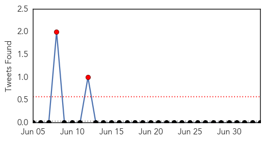
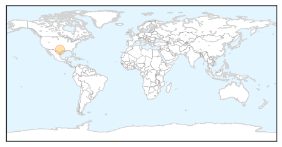
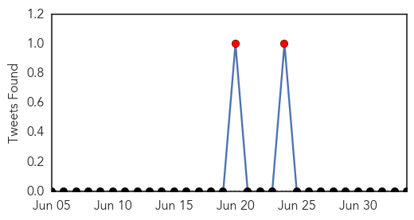
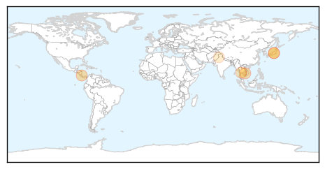

Swine Flu
30-Day Web Trend
0 alerts, 0 warnings

30-Day Twitter Trend
2 alerts, 0 warnings

Article Locations
Article Confidences

Top Articles:
Top Tweets:
-
No tweets found for Jul 04, 2014
Dengue Fever
30-Day Web Trend
4 alerts, 1 warnings

30-Day Twitter Trend
2 alerts, 0 warnings

Article Locations
Article Confidences

Top Articles:
- 0.992
- Costa Rica Health Ministry confirms first case of chikungunya virus -The Tico Times
- 0.979
- Penang’s three cases of Japanese Encephalitis came from different areas, says official
- 0.941
- Cambodia sees 83 pct drop in dengue fever cases in first half - Xinhua
- 0.831
- No report of JE infection in Perak: Mah
- 0.792
- Dengue fever plagues Thailand's Samui
- 0.577
- EDOs ordered to supervise health programmes
Top Tweets:
-
No tweets found for Jul 04, 2014